Defining fuzzy logic system for evaluating TRS performance
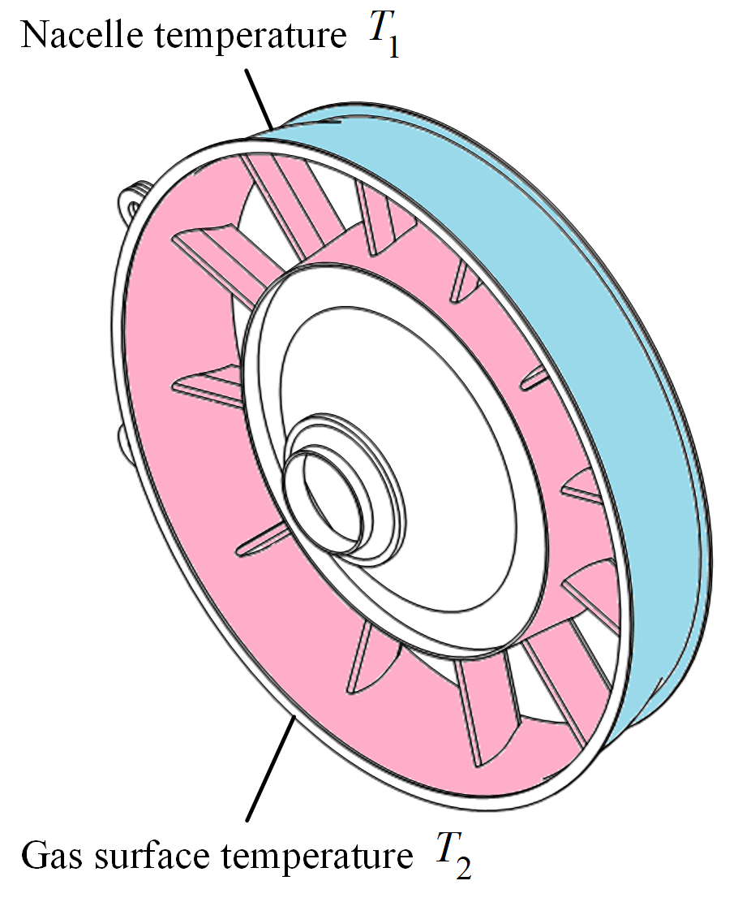
This example shows how to evaluate the design margins of a turbine rear structure (TRS) when experiencing thermal loads. Two temperatures affect the TRS’ performance. They are the temperature of the nacelle compartment \(T_1\) and the temperature of the gas surface \(T_1\). The output that we are interested in is the safety factor \(n_\textrm{safety}\).
Simulation results tell us that \(n_\textrm{safety}\) decreases when the difference \({\lvert}T_2 - T_1{\rvert}\) and vice versa. Based on this qualitative knowledge, we can use mvmlib to quantify these parameters and find out how much change can a TRS absorb.
Define fuzzy parameters
First let us import all the required tools to define the parameters T1, T2, and n_safety as fuzzy parameters
[1]:
from mvm import TriangularFunc, FuzzySet, FuzzyRule, FuzzySystem
Next we define the universe in which our parameters can vary.
[2]:
import numpy as np
# Generate universe variables
lb = np.array([250, 480, 1.0])
ub = np.array([450, 680, 6.0])
labels = ['T1','T2','n_safety']
universe = np.linspace(lb, ub, 100) # grid for all variables
Next, we define the membership functions in the form of a triangular function. The left foot of the triangle is given by shapes_lo, the center of the triangle is given by shapes_md, and the right foot of the triangle is given by shapes_hi.
[3]:
# Define shape of triangular membership functions
shapes_lo = np.array([lb, lb, lb + (ub-lb)/2 ])
shapes_md = np.array([lb + (ub-lb)/4, lb + (ub-lb)/2, ub - (ub-lb)/4 ])
shapes_hi = np.array([lb + 1*(ub-lb)/2, ub, ub ])
Next we create fuzzy set object for each parameter by looping over lb, ub, and n_safety and visualize the results fuzzy sets.
[4]:
# Generate fuzzy membership functions
fuzzy_sets = []
for i in range(len(lb)):
lo = TriangularFunc(universe[:,i],labels[i])
lo.set_func(shapes_lo[0,i],shapes_lo[1,i],shapes_lo[2,i])
md = TriangularFunc(universe[:,i],labels[i])
md.set_func(shapes_md[0,i],shapes_md[1,i],shapes_md[2,i])
hi = TriangularFunc(universe[:,i],labels[i])
hi.set_func(shapes_hi[0,i],shapes_hi[1,i],shapes_hi[2,i])
fuzzyset_i = FuzzySet(lo,md,hi,labels[i])
fuzzy_sets += [fuzzyset_i]
# label each fuzzy set
temp_T1 = fuzzy_sets[0]
temp_T2 = fuzzy_sets[1]
n_safety = fuzzy_sets[2]
# Visualize these universes and membership functions
temp_T1.view()
temp_T2.view()
n_safety.view()
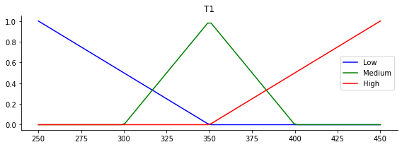
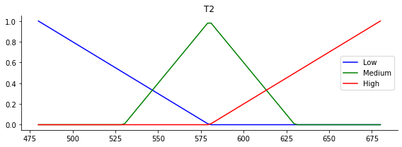
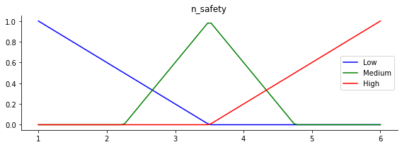
Define fuzzy rules
Next we define the fuzzy rules needed to infer the value of n_safety. The antecedents are T1 and T2 and the consequent is n_safety. The following fuzzy rules should be applied in our fuzzy logic system:
Rule | T1 | Operator | T2 | n_safety |
|---|---|---|---|---|
1 | low | AND | high | low |
2 | high | AND | low | high |
3 | low | AND | low | medium |
4 | high | AND | low | medium |
5 | medium | AND | high | low |
6 | medium | AND | low | high |
7 | low | AND | medium | low |
8 | high | AND | medium | high |
9 | medium | AND | medium | medium |
[5]:
# Define fuzzy rules
rule1 = FuzzyRule([{'fun1': temp_T1.lo, 'fun2': temp_T2.hi, 'operator': 'AND'},],n_safety.lo,label='R1')
rule2 = FuzzyRule([{'fun1': temp_T1.hi, 'fun2': temp_T2.lo, 'operator': 'AND'},],n_safety.hi,label='R2')
rule3 = FuzzyRule([{'fun1': temp_T1.lo, 'fun2': temp_T2.lo, 'operator': 'AND'},],n_safety.md,label='R3')
rule4 = FuzzyRule([{'fun1': temp_T1.hi, 'fun2': temp_T2.hi, 'operator': 'AND'},],n_safety.md,label='R4')
rule5 = FuzzyRule([{'fun1': temp_T1.md, 'fun2': temp_T2.hi, 'operator': 'AND'},],n_safety.lo,label='R5')
rule6 = FuzzyRule([{'fun1': temp_T1.md, 'fun2': temp_T2.lo, 'operator': 'AND'},],n_safety.hi,label='R6')
rule7 = FuzzyRule([{'fun1': temp_T1.lo, 'fun2': temp_T2.md, 'operator': 'AND'},],n_safety.lo,label='R7')
rule8 = FuzzyRule([{'fun1': temp_T1.hi, 'fun2': temp_T2.md, 'operator': 'AND'},],n_safety.hi,label='R8')
rule9 = FuzzyRule([{'fun1': temp_T1.md, 'fun2': temp_T2.md, 'operator': 'AND'},],n_safety.md,label='R9')
Fuzzy inference on a single loadcase
Next we define our fuzzy logic system based on the antecedents, consequents, and fuzzy rules we have defined so far. We infer the value of n_safety based on T1=370 and T2=580 using the centroid rule for defuzzification (default). The outputs are the crisp value n_safety_value, the aggregate membership function of the output aggregate, and the activation function value at the centroid.
All of these outputs are displayed in the plot below.
[6]:
# Define fuzzy control system
rules = [rule1, rule2, rule3, rule4, rule5, rule6, rule7, rule8, rule9]
sim = FuzzySystem([temp_T1,temp_T2],n_safety,rules)
[7]:
# Define inputs and compute the behaviour of the TRS at a given temperature
inputs = np.array([
370.0, # T1
580.0, # T2
])
n_safety_value, aggregate, n_safety_activation = sim.compute(inputs, normalize=True)
# Visualize the fuzzy behaviour
sim.view()
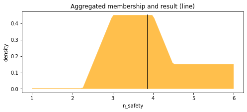
Fuzzy inference on multiple combinations of loads (2D parameter space)
Next we infer the value of n_safety for different combinations of T1 and T2 by sweeping over them. We first create a 2D full factorial grid of the variables
[8]:
from mvm import Design
# Simulate at higher resolution the control space in 2D
n_levels = 20
inputs = Design(lb[:2],ub[:2],n_levels,"fullfact").unscale()
sim.reset() # remember to reset the fuzzy system when inferring a new set of values
Next, we retrieve the crisp values z for each of the samples in inputs
[9]:
# Loop through the system to collect the control surface
z,a,_ = sim.compute(inputs)
# Reshape the outputs for contour plotting
x = inputs[:,0].reshape((n_levels,n_levels))
y = inputs[:,1].reshape((n_levels,n_levels))
z = z.reshape((n_levels,n_levels))
# Plot the result in 2D
import matplotlib.pyplot as plt
fig = plt.figure(figsize=(8, 8))
ax = fig.add_subplot()
surf = ax.contourf(x, y, z, cmap=plt.cm.jet,)
ax.set_xlabel('T1')
ax.set_ylabel('T2')
cbar = plt.cm.ScalarMappable(cmap=plt.cm.jet)
cbar.set_array(z)
boundaries = np.linspace(1, 6, 51)
cbar_h = fig.colorbar(cbar, boundaries=boundaries)
cbar_h.set_label('safety factor', rotation=90, labelpad=3)
plt.show()
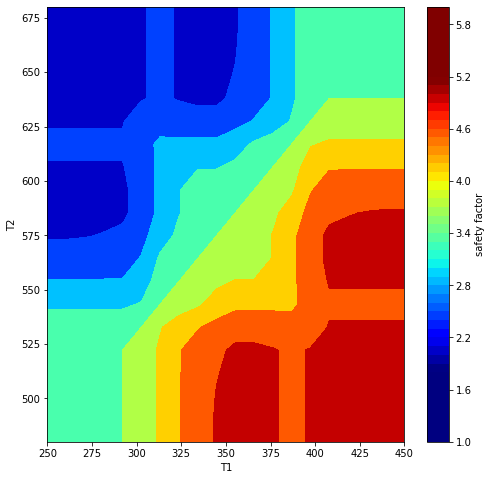
The expected inverse relationship between temperature difference and structural performance can be seen above
Definition of uncertain requirements
Requirement definition
The requirements are high level system specifications. In this examples they are given a Normal distribution in terms of \(T_1\)$ and \(T_2\):
we define the means \(\boldsymbol{\mu}\) and covariances \(\boldsymbol{\Sigma}\) and use them to define a multivariate normal joint PDF
[10]:
from mvm import GaussianFunc # Import the Gaussian distribution class
# Requirement specifications for T1, T2
mu = np.array([370,580])
Sigma = np.array([
[50, 25],
[75, 100],
])
Requirement = GaussianFunc(mu, Sigma, 'R1')
Requirement.random(10000)
Requirement.view(xlabel='Thermal specification $T_1,T_2 \
\sim \mathcal{N}(\mu,\Sigma)$')
Requirement.reset()
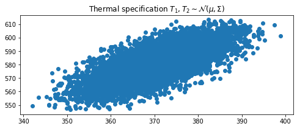
The samples from the distribution follow the expected distribution
A requirement that is used as a target threshold
The target that the TRS must reach is a decided safety factor value that its own safety factor must exceed
This \(n_\textrm{safety}^{decided}\) is usually uncertain and can also be represented by a PDF centered around a mean
[11]:
# for n_decided
mu = np.array([4.0,])
Sigma = np.array([[0.3**2,],])
decided_safety = GaussianFunc(mu, Sigma, 'T1')
decided_safety.random(10000)
decided_safety.view(xlabel='Decided $n_\mathrm{safety}^\mathrm{decided}$')
decided_safety.reset()
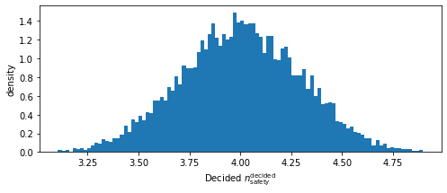
<Figure size 432x288 with 0 Axes>
Elements of Margin Analysis Network (MAN)
In this section we define the inputs and outputs needed to construct a MAN. We begin with the input specifications, which stem from design requirements.
[12]:
from mvm import InputSpec, Behaviour, MarginNode, MarginNetwork
Input specifications
There are three input specifications in this example, \(T_1\), \(T_2\), and \(n_\textrm{safety}^{decided}\)
[13]:
# define input specifications
s1 = InputSpec(Requirement.mu[0], 'S1', universe = [300,450], variable_type='FLOAT', cov_index=0, description='nacelle temperature', symbol='T1', distribution=Requirement)
s2 = InputSpec(Requirement.mu[1], 'S2', universe = [500,650], variable_type='FLOAT', cov_index=1, description='gas surface temperature', symbol='T2', distribution=Requirement)
s3 = InputSpec(decided_safety.mu, 'S3', universe = [3.0,5.0], variable_type='FLOAT', description='decided safety', symbol='n_decided')
input_specs = [s1,s2,s3]
Behaviour
Finally, the TRS own safety factor (governed by its behaviour) is given a simulation model or some other calculation. In this example it is given by the fuzzy logic system we defined. We use the normalized aggregate function to define an arbitrary PDF as follows
[14]:
from mvm import Distribution # Import the arbitrary distribution class
# Behaviour and capability
behaviour = Distribution(aggregate,lb=lb[-1],ub=ub[-1])
print(behaviour.random(10000).mean()) # should be close to 10.0
print(behaviour.random(10000).std()) # should be close to 5.0
behaviour.view()
3.8828408643953733
0.908118934351573
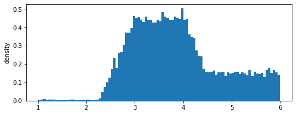
We embed this stochastic model in Behaviour object for the MAN
[15]:
# this is the n_safety model
class B1(Behaviour):
def __call__(self,T1,T2):
# Compute for given inputs
sim.reset()
_,aggregate,_ = sim.compute(np.array([[T1,T2],]), normalize=True)
behaviour = Distribution(aggregate,lb=lb[-1],ub=ub[-1])
self.target_threshold = behaviour.random()
b1 = B1(n_i=0,n_p=0,n_dv=0,n_tt=0,key='B1')
behaviours = [b1,]
Margin Nodes
Now we define the margin node. Since \(n_\textrm{safety} \ge n_\textrm{safety}^{decided}\), this is a must_exceed type of margin
[16]:
# Defining a MarginNode object
e1 = MarginNode('E1',direction='must_exceed')
margin_nodes = [e1,]
Margin Analysis Network
Now we define how all the previous elements are connected together inside a MAN
[17]:
# Defining a MarginNetwork object
class MAN(MarginNetwork):
def randomize(self):
Requirement.random()
decided_safety.random()
s1.random();s2.random();s3.random()
def forward(self):
Requirement.random()
decided_safety.random()
# retrieve MAN components
s1 = self.input_specs[0] # stochastic
s2 = self.input_specs[1] # stochastic
s3 = self.input_specs[2] # stochastic
b1 = self.behaviours[0]
e1 = self.margin_nodes[0]
# Execute behaviour models
b1(s1.value,s2.value)
e1(b1.target_threshold,s3.value)
man = MAN([],input_specs,[],behaviours,[],margin_nodes,[],'MAN_1')
Running the MAN inside a Monte-Carlo simulation
We loop over the defined MarginNetwork object as many times as needed to get the distribution of the margin node
[18]:
import sys
n_epochs = 10000
for n in range(n_epochs):
sys.stdout.write("Progress: %d%% \r" %((n/n_epochs)* 100)) # display progress
man.forward()
e1.excess.view(xlabel='Excess $\Delta = n_\mathrm{safety} - \
n_\mathrm{safety}^\mathrm{decided}$')
e1.excess.view_cdf(xlabel='Excess $\Delta = n_\mathrm{safety} - \
n_\mathrm{safety}^\mathrm{decided}$')
Progress: 99%
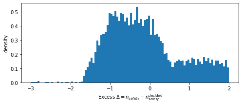
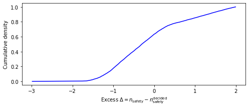